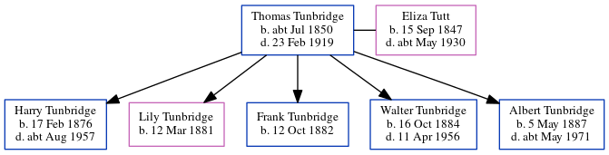

Thomas Tunbridge cJul 1850 - 1919
[ Home ] | [ Calendar ] | [ Surnames Index ] | [ Errors ] | [ Family History ]Thomas Tunbridge, the husband of Eliza Tutt (the great-great-aunt of Nigel Horne), was born in Dover, Kent, England c. Jul 18501,2,3,4,5,6,7,8 and married Eliza (a general servant with whom he had 5 children: Harry, Lily, Frank, Walter and Albert) in St Lawrence, Thanet, Kent, England on 22 Aug 187410 (Jul/Aug/Sep).
During his life, he was living in Hougham, Kent, England in 18711, in 18812 and on 5 Apr 189112; and at 5 Eaton Road in Dover on 31 Mar 190111 and on 2 Apr 191113.
He died on 23 Feb 1919 at 31 Church Road, Dover, Kent, England9.
Children
- Harry was born on 17 Feb 1876
- Lily was born on 12 Mar 1881
- Frank was born on 12 Oct 1882
- Walter was born on 16 Oct 1884
- Albert was born on 5 May 1887
Citations
- 1871 England Census Online publication - Provo, UT, USA: The Generations Network, Inc., 2004.Original data - Census Returns of England and Wales, 1871. Kew, Surrey, England: The National Archives of the UK (TNA): Public Record Office (PRO), 1871. Data imaged from the National (Relation to Head of House: Boarder)
- 1881 England Census Online publication - Provo, UT, USA: The Generations Network, Inc., 2004. 1881 British Isles Census Index provided by The Church of Jesus Christ of Latter-day Saints © Copyright 1999 Intellectual Reserve, Inc. All rights reserved. All use is subject to the (Relation to Head of House: HeadMarital Status: Married)
- 1891 England Census Online publication - Provo, UT, USA: The Generations Network, Inc., 2005.Original data - Census Returns of England and Wales, 1891. Kew, Surrey, England: The National Archives of the UK (TNA): Public Record Office (PRO), 1891. Data imaged from The National
- 1901 England Census Online publication - Provo, UT, USA: The Generations Network, Inc., 2005.Original data - Census Returns of England and Wales, 1901. Kew, Surrey, England: The National Archives of the UK (TNA): Public Record Office (PRO), 1901. Data imaged from the National
- 1911 England Census Online publication - Provo, UT, USA: Ancestry.com Operations, Inc., 2011.Original data - Census Returns of England and Wales, 1911. Kew, Surrey, England: The National Archives of the UK (TNA), 1911. Data imaged from the National Archives, London, England.
- England & Wales births 1837-2006 - Findmypast
- England & Wales, FreeBMD Birth Index, 1837-1915 Online publication - Provo, UT, USA: The Generations Network, Inc., 2006.Original data - General Register Office. England and Wales Civil Registration Indexes. London, England: General Register Office. © Crown copyright. Published by permission of the Cont
- Kent Baptisms - Findmypast
- England & Wales deaths 1837-2007 - Findmypast
- 1911 England Census Online publication - Provo, UT, USA: Ancestry.com Operations, Inc., 2011.Original data - Census Returns of England and Wales, 1911. Kew, Surrey, England: The National Archives of the UK (TNA), 1911. Data imaged from the National Archives, London, England.
- 1901 England, Wales & Scotland Census - Findmypast (was age 50 and the head of the household)
- 1891 England, Wales & Scotland Census - Findmypast (was age 41 and the head of the household)
- 1911 Census for England & Wales - Findmypast (was age 61 and the head of the household)
Media
Dover Express 28 Feb 1919

1891 England, Wales & Scotland Census - GBC/1891/0005982757
1911 Census for England & Wales - GBC/1911/RG14/04600/0325/1
England & Wales deaths 1837-2007 - BMD/D/1919/1/AZ/001387/102
England & Wales births 1837-2006 - BMD/B/1850/3/SZ/000496/038
Kent Baptisms - GBPRS/B/82643408/1
Family Tree
Map
Generated by ged2site. Last updated on Jul 3, 2024
Known Issues
No records of living with anyone